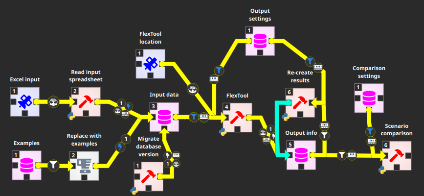

IRENA FlexTool with Spine Toolbox
Spine Toolbox is an alternative orchestration interface for FlexTool. The other, simpler, interface is the standalone FlexTool GUI; Spine Toolbox is the heavier path that wraps FlexTool as one node in a directed-acyclic-graph (DAG) workflow alongside other tools and data stores. It allows not just to run FlexTool, but also to wrap it in more complex workflows (e.g. input data preparation or multi-tool pipeline) - when doing that, best to make a separate Spine Toolbox project in another folder or then freeze particular FlexTool installation to the purpose. The default workflow is part of FlexTool repository and you will get merge conflicts if you edit it and then try to pull repository updates.
See Install with Spine Toolbox for installation and Choosing an interface for the side-by-side comparison with the FlexTool GUI and the terminal CLI.
When to choose Spine Toolbox
- You are combining FlexTool with other Spine-based models in a single workflow.
- You want a DAG view of pre-processing, FlexTool, and post-processing steps, with the scenario filter visible on each connection.
- You already use Spine Toolbox for other projects and would rather not run a second orchestration GUI alongside it.
For FlexTool-centric work (build scenarios, run them, inspect results in one place), the FlexTool GUI is the recommended choice instead.
Opening the FlexTool project in Toolbox
The FlexTool repository ships a complete Spine Toolbox project under the .spinetoolbox/
directory at the repo root. After installing FlexTool with the [toolbox] extra and
launching spinetoolbox, use File → Open project… and select the FlexTool root
directory (not a file inside it). Toolbox reads .spinetoolbox/project.json and
reconstructs the workflow, item positions, and connections.

The right-hand panel lists the scenarios discovered in the Input data database. Ticking scenarios there decides which ones run when you execute the workflow; Toolbox can execute several in parallel as long as the FlexTool item is configured to use work directories.
The shipped workflow
The v4 workflow has been streamlined from the v3 layout: there is no longer an
Export_to_csv step, because the v4 engine builds the LP in memory directly from the
Spine database. CSV is now an optional output renderer, not a hand-off format inside the
workflow.
The items that actually ship in .spinetoolbox/project.json are:
- Input data (Data Store) — the working
.sqlitedatabase that the FlexTool engine reads from. Double-click to open it in the Spine database editor. Replace the file (via the OS) or repoint the data store to use a different input database. - Examples (Data Store) — the read-only
templates/examples.sqliteshipped with the repository. Holds the example scenarios used in the user guide. - Replace with examples (Merger) — copies selected example scenarios from
Examples into Input data. The scenario filter on the connection chooses which
ones are copied. This replaces the older
Init/Initializepair. - Migrate database version (Tool) — runs the
migrate_databasespecification against Input data to upgrade it to the current FlexTool DB schema version. Use it after pulling a new FlexTool version. - Excel input (Data Connection) — points at a spreadsheet (
example_input.xlsxby default) for the spreadsheet-fed flow. - Read input spreadsheet (Tool) — runs the
Read tabular dataspecification to import the contents of Excel input into Input data. See Excel interface for the file format. - FlexTool location (Data Connection) — small user-local text file
(
templates/project_folder.txt) recording the project folder the run roots its outputs at. See Choosing the project folder below. (This replaces the olderflextool_location.txt; you may rename the connection to "Project folder" in the Toolbox GUI if you like.) - FlexTool (Tool) — the solve step. Runs
flextool/cli/cmd_run_flextool.py(the same module as theflextool-runconsole script) as a subprocess. Receives the Input data, Output info, and Output settings database URLs as arguments. - Output info (Data Store) —
output_info.sqlite, where the FlexTool run records what it produced (scenario list, output locations). - Output settings (Data Store) —
output_settings.sqlite, holding render-side toggles consumed by FlexTool and Re-create results. - Re-create results (Tool) — runs the
Process outputsspecification to rebuild CSV / Excel / plot renderings from the parquets without re-solving. - Comparison settings (Data Store) —
comparison_settings.sqlite, configuration for the scenario-comparison renderer. - Scenario comparison (Tool) — runs the
scenario comparisonspecification to build cross-scenario dispatch plots and summary tables from the parquets in Output info.
How FlexTool itself runs
The FlexTool workflow item is a Spine Toolbox Tool whose specification is a thin
Python entry that calls flextool/cli/cmd_run_flextool.py — the same CLI command the
FlexTool GUI and the flextool-run console script invoke. Once it starts, no Spine
Toolbox code is in the loop:
- The engine reads inputs from the Input data Spine database via
SpineDBBackend. - Per-solve preprocessing produces polars frames in memory.
polar_highassembles the LP and HiGHS solves it in-process throughhighspy.- Solutions are written to parquet under
output_parquet/<scenario>/, and CSV / Excel / PNG renderings are produced from those parquets on top.
There is no CSV hand-off between the workflow and the engine. The CSV files in
solve_data/ only appear when --debug --csv-dump is passed, and they are not
load-bearing for anything downstream. See Architecture for the
full data-flow diagram.
Project folders and results
A Toolbox run roots all of its outputs — output_parquet/, results.sqlite,
plots, and the per-project plot_settings.yaml — at a project folder you
choose, instead of scattering them at the repo root. This makes the Toolbox
track a peer of the FlexTool GUI: the GUI picks up
Toolbox-produced results, and the Toolbox can run a GUI-made project.
Choosing the project folder
The project folder is set by editing one line in the user-local, gitignored
file templates/project_folder.txt (seeded for you by flextool-update):
projects/Rivendell
The path may be absolute or relative to the FlexTool root. Leave the file blank (or with only comment lines) to send outputs to the FlexTool root — the old behavior. Because the file is gitignored, editing it never dirties git, so you switch projects simply by editing this line (and pointing the Input data Data Store at that project's input database).
Producing the results SpineDB
To get a results SpineDB at <project>/results.sqlite, set
output-spinedb = true in the Output settings database. Both steps honor it,
with each scenario as a Spine alternative:
- The FlexTool run writes it directly from the live solve (the usual case — the full results land in the DB as the scenarios run).
- The Re-create results step (re)builds or augments it by replaying the
processed parquet — no re-solve. Use this to add the SpineDB afterwards
without re-running, or to reduce the scenario set via its alternative filter.
Whatever else you tick in Output settings (
output-plot/output-excel/output-csv) Re-create also (re)produces.
Two caveats apply to the replay path only:
- The two inflation / discount-factor parameters are omitted (they need the live solve); the native run path writes the full set.
- For a bidirectional connection the
(source, sink)byname uses the parquet(node_1, node_2)geometry; one-directional connections are exact.
Per-project plot settings
Place a plot_settings.yaml in the project folder
(projects/<Name>/plot_settings.yaml) to control plot colours and stacking
order. It is now honored automatically by both the per-scenario plots and the
comparison plots in the Toolbox track (previously the Toolbox track silently used
the bundled default).
FlexTool GUI interoperability
Outputs under projects/<Name>/output_parquet/<scenario>/ are discovered
automatically by the FlexTool GUI — the folder name is the result identity. A
Toolbox-produced scenario appears under "source 0" in the GUI, which is cosmetic.
Conversely, the Toolbox can run a project built in the GUI: point the Input
data Data Store at projects/<Name>/input_sources/<db>.sqlite and set
templates/project_folder.txt to projects/<Name>.
Migration
There is no forced migration — existing workflows keep working, and a blank
project_folder.txt reproduces the old repo-root behavior. The only steps:
- Run
flextool-update(orpython update_flextool.py). It seedstemplates/project_folder.txtand refreshes the settings databases (which already carry theoutput-spinedboption). - Only if you forked or customized
.spinetoolbox/project.json: update the FlexTool Tool's command argument from--flextool-location <project>/templates/flextool_location.txtto--project-folder-file <project>/templates/project_folder.txt. The legacy--flextool-locationargument still works as a fallback. - To direct outputs into a project folder, put its path in
templates/project_folder.txt. To getresults.sqlite, setoutput-spinedb=truein Output settings.
Customising the workflow
To experiment with workflow changes without touching the git-controlled .spinetoolbox/
in the FlexTool checkout, create a new Toolbox project in a separate folder, then use
the toolbar's + From file… button to add the specifications from
.spinetoolbox/specifications/ of your FlexTool checkout. The specifications stay in the
FlexTool repository (and update with git pull / update_flextool.py), while the new
project file lives wherever you put it.
Limitations
- The shipped workflow is tuned for the Spine database editor. One can use the tabular importer flow (imports Excel or LibreOffice that use specific format), but be careful to edit only in one place.
- The Spine Toolbox UI itself sees occasional minor graphical glitches on macOS; the underlying FlexTool runs are unaffected.
See also
- Install with Spine Toolbox
- Choosing an interface — which interface to pick
- FlexTool GUI — the primary interface
- Spine database — the SQLite input format
- Excel interface — the parallel spreadsheet input flow
- Terminal CLI — headless / CI usage
- Architecture — what runs under the hood
- Spine Toolbox User Guide